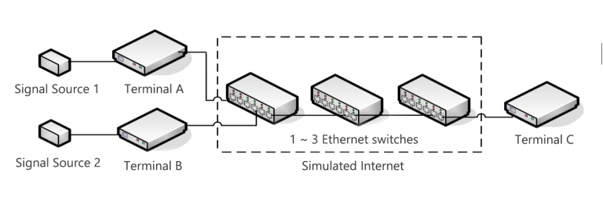
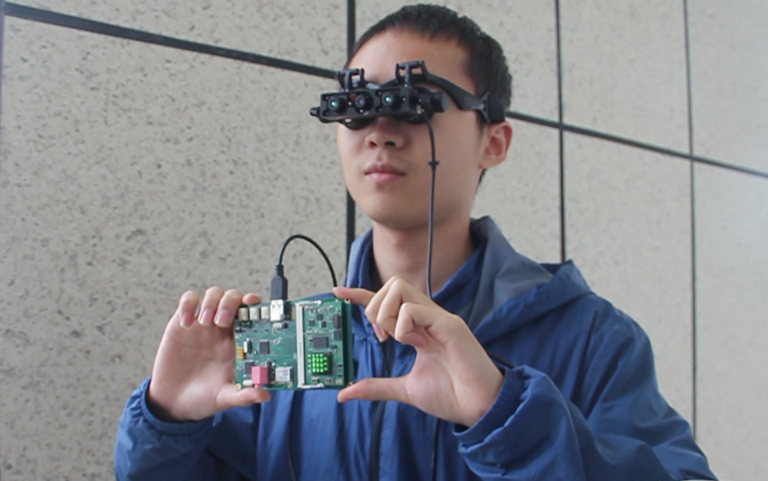

About Me
Hi There! 我是 Zhuobin Huang，我本科就读于 电子科技大学 (UESTC) 下的信息与通信工程学院下的网络工程系专业，2021 年保送至同学院下攻读研究生，目前研究生一年级。
我热衷于构建系统，我的研究兴趣包括：
- Building Distributed System for Graph Neural Network on Large-scale Graph Data
- Optimizing Linux Kernel Network Performance (e.g. via Userspace Framework, or DPU)
如果您有兴趣的话，点击查看 我的 CV。
Publications
- Y. Wang, X. Wang, Z. Huang, C. He, Y. Zhang and S. Xu, "NeuralMon: Graph Neural Network for Flow Measurement Allocation," 2021 IEEE Global Communications Conference (GLOBECOM), 2021
- Y. Wang, X. Wang, Z. Huang, W. Li and S. Xu, "Joint optimization of dynamic resource allocation and packet scheduling for virtual switches in cognitive internet of vehicles," EURASIP Journal on Advances in Signal Processing 2022.1 (2022): 1-21
Industry
华为
Nov. 2021 ~ 现在
校级致远班
成都研究所
- 校级致远班成员：2021～2022 年度「电子科技大学-华为」校企合作致远班成员。
- 实习：在 2020 年拿到了华为 "勇敢星" 实习计划的 offer，但是由于 2020 年春、夏季的新冠疫情防控要求，遗憾错过了这段实习。
字节跳动
Mar. 2021 ~ Sept. 2021
网络虚拟化研发工程师 (实习)
火山引擎产研架构部
- OVS-DPDK 的研发和优化：参与内部 IDC 用于构建虚拟交换网络的基础设施 Open vSwitch-DPDK 的重构和优化，提高了数据面的瓶颈性能，以适应内部业务的需求。
- 基于 Open Stack 的控制面研发：负责研发和维护虚拟网络控制面用以保证控制事务原子性的软件框架。
- 线上业务运维：负责部分线上业务、数据库的稳定保证、错误定位、排查和解决。
英国保诚投资信贷保险公司
Aug. 2018 ~ Sept. 2018
实习生 (课程+项目)
香港总部
- 学习有关金融保险产品的相关知识，熟悉相关金融行业运行机制和现状。
- 带领小组从金融数学的角度出发设计与孕妇有关的保险产品，产品获得企业专家的认可。
- 表现优异获得了高级区域主任 Xu Meng 的企业推荐信。
Projects

基于 IEEE1588 的周期信号同步传输系统 2019 年全国大学生电子设计竞赛
在 2019 年夏天举办的全国大学生电子设计竞赛中，我带领团队设计了基于 IEEE1588 (PTP,精确时间戳协议) 的信号传输系统，实现了在分布式网络节点上的同步信号采集和同步再生 (i.e. 在图中 A 和 B 终端上采集两路不同的周期信号，利用物理网络将采集数据发送给终端 C，并在 C 上实现两路周期信号的同步再生)。凭借系统毫秒级别的精度和稳定性，我们最终赢得了全国二等奖。

穿戴式智能导盲设备 2019 年 “互联网+” 大学生创新创业大赛
从 2018 年 10 月到 2019 年 10 月，我参与到了一款用于辅助盲人室内外出行的穿戴式智能导盲设备的开发中。我负责的主要工作除了针对系统 MCU (型号：STM32F7 & STM32F1) 的底层驱动软件编写之外，还有基于卡尔曼滤波器 (Kalman Filter) 的融合 GPS 和惯性导航数据的高精度导航算法。这个设备在 2019 年拿到了国家专利，并且已经在成都市一些特殊教育学校投入测试使用。